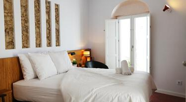
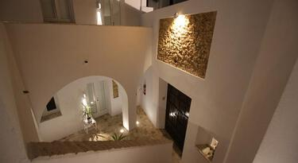

VEJERÍSIMO es una casa rural ubicada en un callejón tranquilo en el corazón del casco antiguo de Vejer de la Frontera, muy cerca de los restaurantes, bares y lugares de interés. Al lado de la casa empieza la muralla antigua con “La Puerta Cerrada”, una de las 4 puertas principales.


